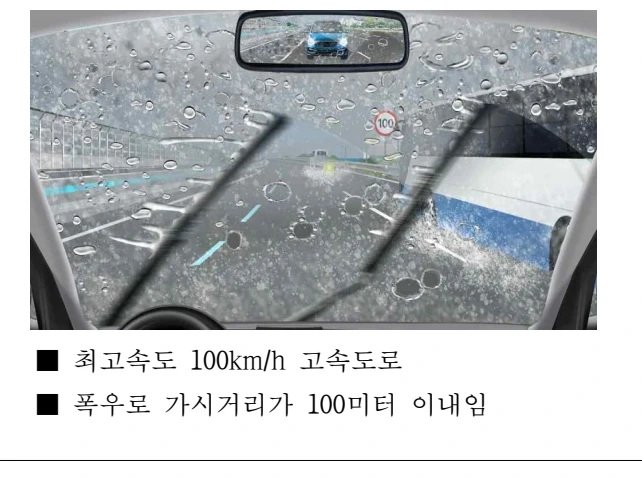

836. Which of the following are the TWO safest ways to proceed in the given situation?

- ①Drive at a speed below 80 km/h because the road surface is wet due to rain.
- ②Drive carefully and remain aware that your vision may be blocked by water splashing from a large bus on the right when it passes through a puddle.
- ③Turn on the hazard lights to inform the driver behind you of your position while driving.
- ④Switch to the first lane and continue driving, anticipating that the vehicle ahead on the right may change lanes.
- ⑤Make an emergency stop to secure safety if visibility is suddenly blocked by splashing water from puddles.
Show answer
Answer
② Drive carefully and remain aware that your vision may be blocked by water splashing from a large bus on the right when it passes through a puddle.
③ Turn on the hazard lights to inform the driver behind you of your position while driving.
Reference
① On expressways with at least two lanes in each direction and no separate speed signs, the maximum speed for passenger cars is 100 km/h. In adverse weather, Article 19 of the Road Traffic Act Enforcement Rules requires these reductions: reduce the maximum by 20% if rain has made the road wet OR snow is less than 20 mm deep; reduce it by 50% if visibility is 100 m or less due to heavy rain, snow or fog, OR the road is icy, OR snow is at least 20 mm deep. ④ On expressways with at least three lanes in each direction, lane 1 is for passenger cars and light, small or medium passenger vans/buses overtaking. However, it may also be used without overtaking when traffic or other road conditions unavoidably restrict speed to below 80 km/h. ⑤ Sudden braking on a wet road can cause a skidding accident due to hydroplaning.
Reference text is a machine translation for study.